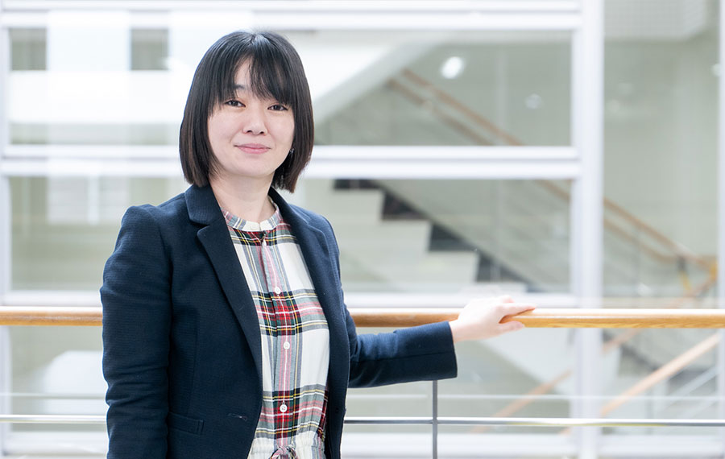
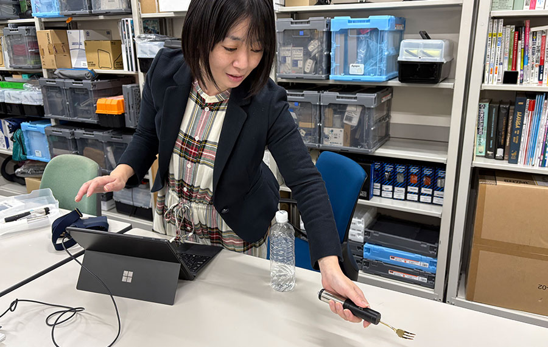
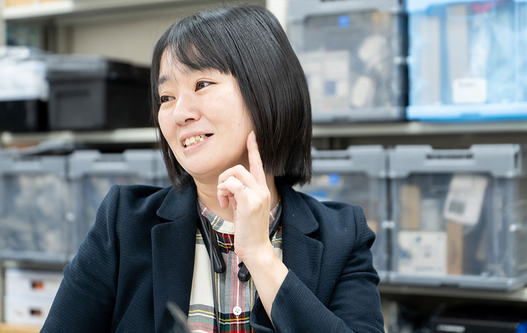
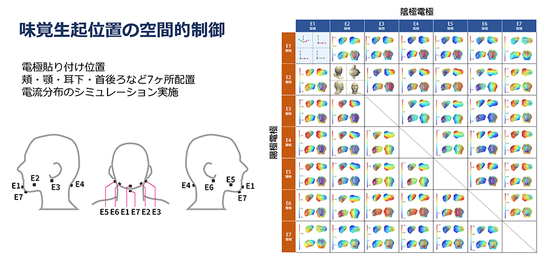
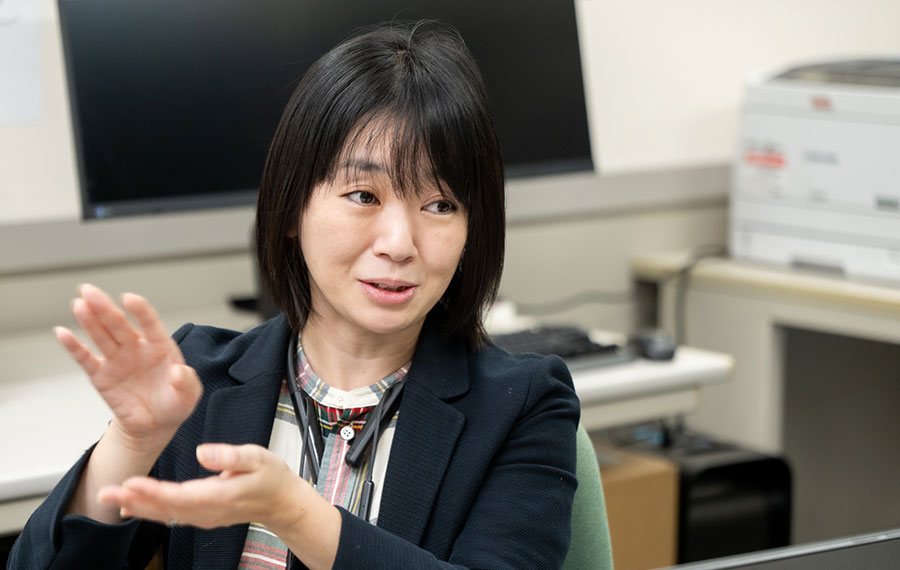

電気で味をコントロールできるか
－電気味覚でイグノーベル賞を獲るまでと、これから－

中村 裕美
東京都市大学メディア情報学部准教授
2009年日本大学芸術学部卒。2014年明治大学大学院博士課程修了（工学）。日本学術振興会特別研究員-PD、国立研究開発法人産業技術総合研究所情報技術研究部門産総研特別研究員、東京大学大学院情報学環特任助教、同大学特任准教授を経て、2024年東京都市大学メディア情報学部准教授。電気味覚をはじめとした人間拡張技術に関する研究に従事。2010年度未踏IT人材発掘・育成事業スーパークリエータ、第20回メディア芸術祭エンタテインメント部門優秀賞。2023年イグノーベル賞受賞。
── 中村さんはイグノーベル賞受賞者としても有名ですが、研究内容について教えてください。
電気刺激で味覚を変えるという研究は大学院時代に着手したものです。視聴覚インタフェースだけでなく、様々なインタフェースの可能性を検討していたのですが、着目したのが口です。何かの話の最中に、「情報を咀嚼（そしゃく）する」という言葉を使ったときに、ハッとしたのです。口や舌はインプットもできて、随意に動かすこともできる。発音にも飲食にも不可欠です。小さい割に様々な役割を兼務している面白いパーツであり、もっと情報処理に密接にかかわることができる器官なのではないかと思い立ちました。当時から、舌でキーボードを打ったり、口の中にマウス入力ができるデバイスを入れるといった、何かをコンピューター側にインプットする方法論はありました。しかし逆はどうでしょうか。コンピューターからアウトプットするといっても、ビジュアルや音で返すものがメインであり、舌に返すものは限られていました。何か方法はないかと試行錯誤していたところ、あるときに先生から、「電池を舐めると味がするよね」という話を聞き、すぐに電池を買ってきて舐めてみると確かに味を感じました。そこから、表面に寒天層のようなものを載せて、そこに舌がタッチしたときに電気が流れるのはどうかと発想し、寒天を使って試したのが最初です。
寒天に電極を付けて舌が触れる状態にして、電気回路のオン・オフをすると、電気を流しているときだけ味の感覚が付加されることがわかりました。調味料は一度加えると取り除けません。可逆性がないのです。その後、食器のフォーク型のデバイスを開発し、それを刺して電流を流した寒天は、基本的に電気を流しているときに味がします。電気をオフにすると味がなくなります。電気によって味の強弱も調整できます。何かを変質させるわけではないので、可逆性があるのです。技術の力で「味をオン・オフできる」、そのことに感動したのがこの研究の原点でした。

── 甘い、苦い、酸っぱい、塩辛い、辛いなど、味を自由にコントロールできるものですか。
皆さんそれを期待されるのですが（笑）、現段階ではできることとできないことがあります。メインは塩味です。塩はNaClですが、口に含んだ後は、NaとClが口腔内の液体の中で電離した状態で存在しています。電気をかける方向をコントロールし、味のするイオンを舌側に寄せていくのか、舌から離していくのかで味を濃くしたり薄くしたりすることができると考えられています。液体の中で電離している電解質でなければ動かせませんが、少なくとも塩味が強まる、弱まることははっきりと分かっています。これが健康問題の解決につながる可能性があるのです。日本人は、WHOの基準の約1.5倍以上塩分を摂りすぎていると言われています。しかし、塩味は食べ物の風味を決めるのに大きな影響を及ぼしますから、単に減らせというだけで解決できる問題ではないのです。私たちのアプローチで、塩味を強く感じつつ、あまり塩を摂取せずに済ませることができるのではないか。工学的にしっかりとした実験プロセスを経つつ、食品業界と一緒に感覚の評価も加えながら研究を進めています。
── 今後、どのように研究を進化させていきますか。

現在、取り組んでいるのは肌に貼り付けて刺激をするタイプです。EMS（Electrical Muscle Stimulation）のように、皮膚に電気刺激をするものがありますが、顔に貼って電気刺激をすることで味を感じるという論文があり、現在はその研究者と一緒に研究を行っています。皮膚に貼ることで塩味を強める技術ですが、電気味覚フォークとは異なり、好きな場所に電極を貼り、電気を流す位置を変えることができます。頬や首の後ろに貼るとどうなるのかといったシミュレーションを繰り返すわけです。

例えば、左に貼ると左側に味が出るといったこともわかってきています。陽極と陰極、プラスとマイナスがどこかにあればよいので2カ所に貼れば良いのですが、数多くの電極を貼って電気の流し方を変えるとパラパラマンガのように、口の中で味が移動していくという結果も出るようになりました。これは新しい食や味の表現を可能にした、ということでもあります。
── 中村さんはもともと芸術学部からスタートして、どのように研究者の道に至ったのですか。
私は子供のころから音楽や演劇が好きでした。目立たないおとなしい子供という側面もありましたが、一方で、おもちゃや工作に凝り始めると母を何時間も待たせて没頭したり、学芸会でやりたい役を譲らなかったり。興味を持ったらとにかく試してみたいタイプである一方、一度何かを始めるとこだわりきって、周りが見えなくなってしまうこともありました。大学の学部を選ぶ際に一般的な学部ではなく、芸術系を選んだことは当時の私なりのこだわりがあったのだと思います。今にして思うと、「人は何かの刺激を受けたときに、どう感じるのか。それはなぜなのか」ということへの興味は一貫しているように思います。
芸術からサイエンスにつながるきっかけの一つは、メディアアーティストの岩井俊雄さんの講演でした。岩井さんのご講演と岩井さんが作られたTENORI-ON（テノリオン）という新しい音楽インタフェースに衝撃を受けた私は、岩井さんに弟子入り志願の手紙を書きました。 その後、当時製品が出たばかりで大変お忙しい時期だったにもかかわらず、岩井さんは当時一介の学生に過ぎない自分へ返信をくださいました。内容としてはとても丁寧なお断りのメッセージだったのですが、その中に「視聴覚のメディアはいろいろとやり尽くされている傾向にある時代ですが、あなたなりのメディアを開拓できるといいですね」といった意味合いの一文が入っていました。結局私は、視聴覚以外のメディアにたどり着いて今があるわけです。後から答え合わせをすると、本当に感謝しかありません。
── 今後も電気味覚というテーマを深掘りしていきますか。

電気味覚に取り組む中で、食全般に興味が広がりつつあります。おいしさというのはある種の多層構造であり、味で舌を満足させるだけで十分なわけではありません。例えば音の有無や種類が、おいしさに与える影響は無視できないと考えるようになってきています。味そのものよりも、「おいしさとはどういうことなのか」について、もう少し広げて取り組んでいきたいのです。私自身も、グルメに詳しい知人がおいしいと言うだけで、それをおいしく感じてしまうことがあります。京都大学の伏木亨先生は、人間が感じるおいしさを分類し、「情報によるおいしさ」の存在を指摘されていますが、まさにそういったことです。
その他にも、マンガの中に出てくる食べ物ってやたらおいしそうに見えませんか。こういうものを実食化することや、コンピュータービジョンを使って聖地巡礼（コンテンツツーリズム）の食べ物版を実現することなどもアイディアにあります。また、食べ物の上に金箔で回路をつくり、そのアプリケーションのひとつとして電気味覚を使うといったプロジェクトにも参画しています。「これはどうなるのだろう」という研究者マインドを持ち続けたまま、今後はもっと表現に寄せていく可能性もあります。普通、キャリアが積み重なると生き方も固まってくる気もしますが、私はまだまだ不定形が過ぎるようですね（笑）。
── 最後にぜひメッセージをお願いします。
日本は他の国と比べてもイグノーベル賞に強く、数多くの受賞者を輩出しています。イグノーベル賞のトップの方が言うには、多くの国が奇人や変人を蔑視する中で、日本はそれを誇りにできる文化があるからではないかと。未踏事業も、本人の独創性を大事にして、唯一の人材を輩出することが目的です。人と違っても自分が誇ることができる何かがあるほうが、相手をリスペクトすることができます。逆に言うと、相手に正しいリスペクトを持つには、自分の軸をしっかりと持っていなければ難しいということでもあります。それは必ずしも既にあるものや他の人と一緒でなくてもよいのではないかと考えています。私自身、興味や疑問に導かれてアート、そしてサイエンスの道を歩み、今に至ります。そしてこれからも必ずしも人と同じではないかもしれない道を自分らしく進んでいきたいと思っています。
企画・取材・編集 清水隆史